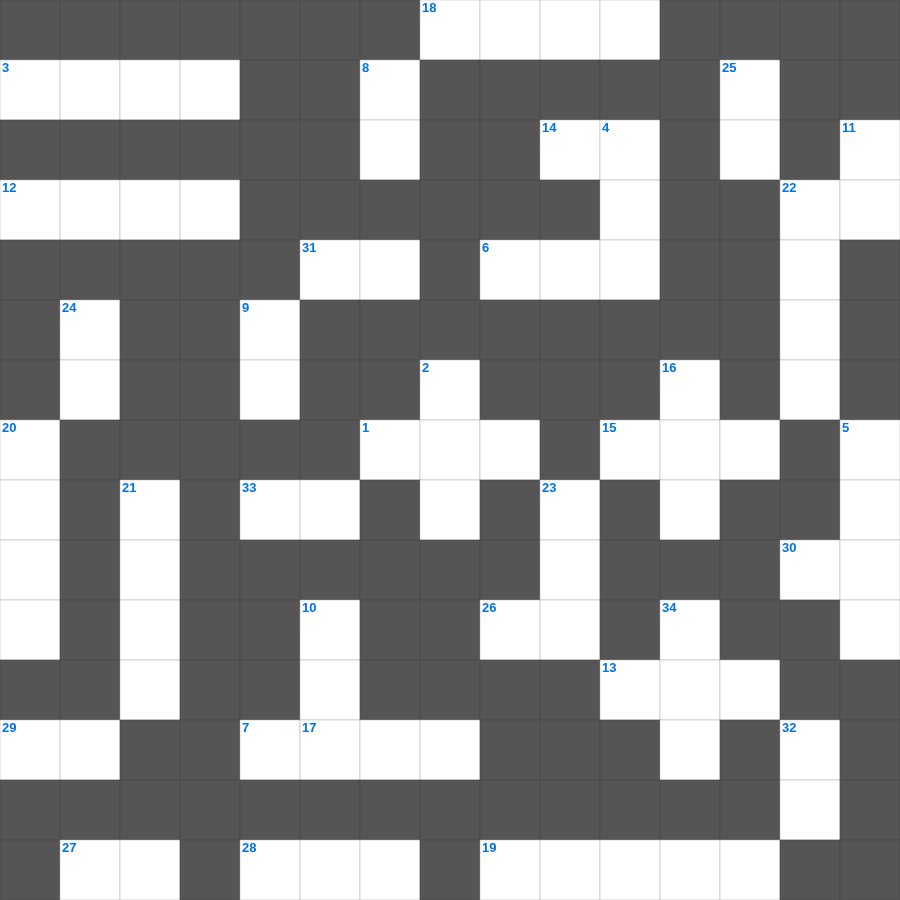

성경 속 악기 이야기
📌 서비스 정의
십자가로세로는 교회 주보와 주일학교에서 사용할 수 있는 성경 기반 가로세로 퍼즐 서비스입니다. 성경 인물, 사건, 핵심 구절을 바탕으로 제작되었습니다. 온라인 풀이 및 인쇄 기능을 제공합니다.
무료로 즐기는 성경 성경 성경퀴즈! 35개의 힌트로 구성된 가로세로 낱말 퍼즐입니다. PC와 모바일 모두 지원되며, 정답을 바로 확인할 수 있어 혼자서도 쉽게 풀 수 있습니다.

📝 가로 힌트
1. 성막 마당에 있는 씻는 대야
3. 하나님의 말씀을 가르치고 배우는 곳
6. 엘리야가 바알 선지자와 대결한 산
7. 하나님은 모든 사람이 구원을 받으며 이것을 아는 데 이르기를 원하시느니라
12. 예수님을 은 30에 판 제자
13. 매우 작은 씨앗의 대명사
14. 여호와 이것: 승리의 하나님
15. 솔로몬 성전 건축에 쓰인 고급 나무
17. 이사악의 아내
18. 하나님의 은사와 부르심에는 이것이 없느니라
19. 엘리가 의자에서 넘어져 목이 부러져 죽은 이유
22. 다윗이 사울을 위해 연주한 악기
26. 아브라함이 이삭 대신 드린 제물
27. 엘리야가 회오리바람을 타고 간 곳
28. 사도 요한이 계시록을 기록한 섬
29. 유대인의 왕, 나사렛 이것
30. 광야에서 하늘에서 내려온 양식
31. 십계명이 새겨진 것
33. 나는 마음이 이것하고 겸손하니
📝 세로 힌트
2. 예수님의 제자 수
4. 모세가 십계명을 받은 산
5. 양의 뿔로 만든 나팔
8. 땅 끝까지 이르러 내 이것이 되리라
9. 양 떼를 치는 감독자
10. 두 번째 재앙: 온 땅에 올라온 동물
11. 너희는 세상의 빛과 이것이라
16. 향을 피워 올리는 곳
20. 지붕을 뚫고 내려온 병자
21. 오순절 다락방에서 성령이 임한 사건
22. 천사 가브리엘이 마리아에게 예수 탄생을 알림
23. 보라 세상 죄를 지고 가는 하나님의 이것
24. 슬플 때 찢으며 입었던 옷
25. 예수님이 십자가에서 돌아가신 사건
32. 예수님의 지상 직업
34. 예수님이 매달리신 형틀
🧑🏫 교회 교육 자료 활용
이 퍼즐은 주일학교 교재 추천 자료로 활용할 수 있고, 주일학교 주보에 넣기 좋은 분량으로 구성되어 있습니다. 수업용 주일학교 교안에 활동지로 붙이거나, 예배 후 복습용 주일학교 공과교재로 바로 사용할 수 있습니다.
🏷️ 키워드
성경 성경퀴즈, 성경, 십자가로세로, 성경퀴즈, 말씀퀴즈, 가로세로퍼즐, 주일학교 교재 추천, 주일학교 주보, 주일학교 교안, 주일학교 공과교재